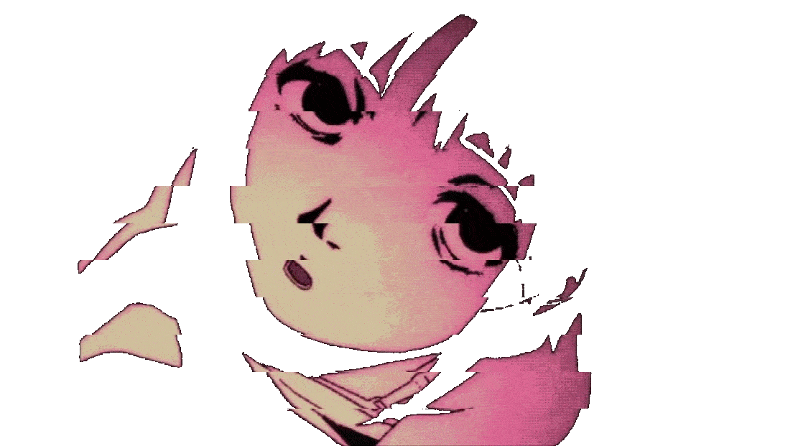
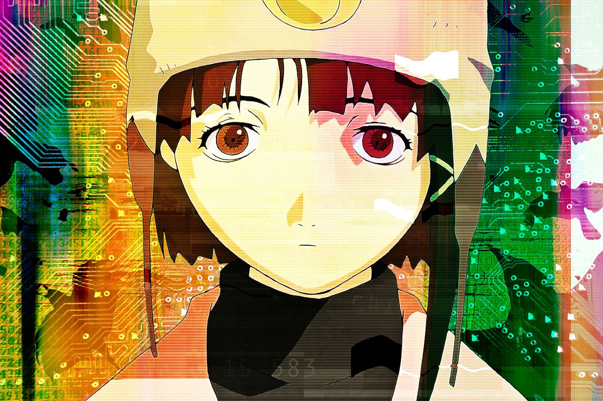
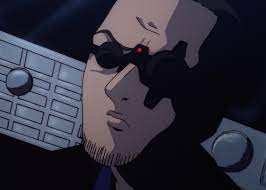

Login
About
Help
Suprise
Tracklist

============= [ About The Wired] =============

[ Lain Iwakura ]
[ Alice Mizuki ]
[ Touku Yonera ]
[ Yasou Iwakura ]
[ Mika Iwakura ]
[ Eiri Masami ]
[ The Knights ]

[ Men In Black ]